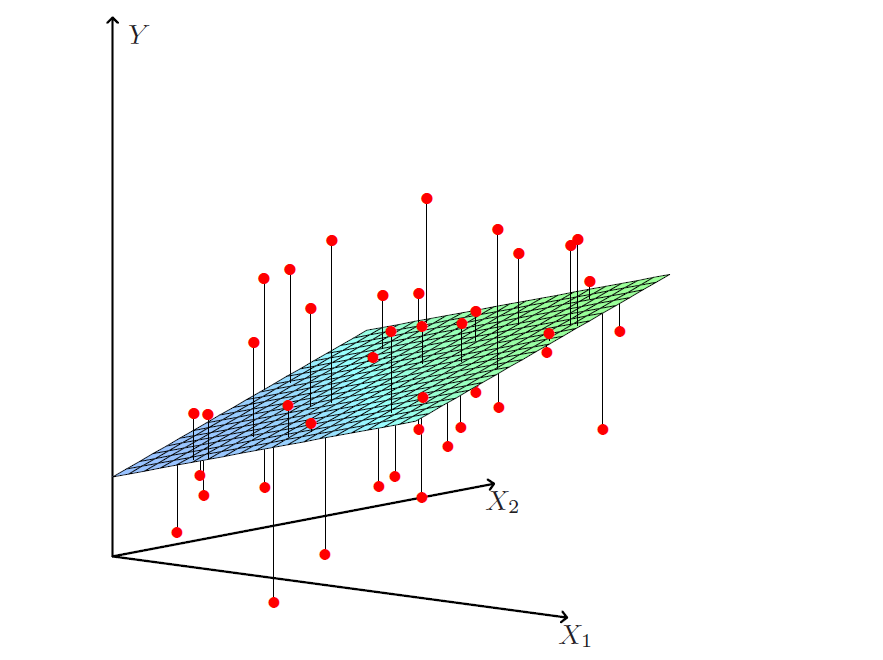

다중선형회귀분석(multiple regression analysis)은 하나의 반응변수를 여러 개의 설명변수로 설명하는 방법이다. 단순선형회귀분석에서는 하나의 설명변수와 반응변수 사이의 관계에 초점을 두지만, 실제 자료에서는 반응변수에 영향을 줄 수 있는 요인이 여러 개인 경우가 대부분이다. 따라서 다중회귀분석에서는 각 설명변수의 효과를 해석할 때 반드시 “다른 변수들이 동일하게 유지될 때”라는 조건을 함께 고려해야 한다.
다중회귀분석의 가장 중요한 특징은 보정(adjustment) 이다. 예를 들어 나이와 체중을 이용하여 혈압을 설명한다고 하자. 이때 체중의 회귀계수는 단순히 체중과 혈압의 관계를 의미하는 것이 아니라, 나이가 같은 사람들 사이에서 체중이 한 단위 증가할 때 혈압의 평균이 얼마나 달라지는지를 의미한다. 따라서 다중회귀분석의 회귀계수는 항상 다른 설명변수들이 모형에 함께 포함되어 있다는 점을 고려하여 해석해야 한다.
다중선형회귀모형 - 설명변수가 두 개인 경우
관측벡터 \((X_{11},X_{12},y_1), (X_{21},X_{22},y_2), \cdots, (X_{n1},X_{n2},y_n)\) 에 대해 다중선형회귀모형을 생각해 보자.
\(X_1, X_2\) 는 고정된(fixed) 설명변수이고 \(Y\) 는 일변량 반응변수인 경우, 설명변수들과 반응변수 간의 선형회귀모형은
\[
Y=\beta_0+\beta_1X_{1}+\beta_2X_{2}+\epsilon
\]
여기서 회귀모수로 \(\beta_0\) 는 절편, \(\beta_1\) 은 \(X_1\) 과 관련된 회귀계수, \(\beta_2\) 는 \(X_2\) 와 관련된 회귀계수, 오차항 \(\epsilon \stackrel{iid}{\sim} N(0,\sigma^2)\) 을 가정
\(n\) 개 관측점에 대해 표현하면
\[
Y_i=\beta_0+\beta_1X_{1i}+\beta_2X_{2i}+\epsilon_i, \,\,\, i=1,2,\cdots, n
\]
여기서 \(Cov(\epsilon_i,\epsilon_j)=0, \,\,\, i\ne j\)
\[
\mathbf{Y}=\mathbf{X}\beta +\epsilon
\]
\[
\mathbf{Y}=\begin{pmatrix} Y_1\\Y_2\\\vdots\\Y_n \end{pmatrix}, \,\,\,
x_i=\begin{pmatrix} 1\\X_{i1}\\X_{i2} \end{pmatrix}, \,\,\,
\mathbf{X}=\begin{pmatrix}x_1'\\\vdots\\x_n' \end{pmatrix}=\begin{pmatrix}1 & X_{11}&X_{12}\\
\vdots &\vdots &\vdots \\ 1&X_{n1}&X_{n2} \end{pmatrix}, \,\,\,
\beta=\begin{pmatrix}\beta_0\\ \beta_1\\ \beta_2 \end{pmatrix}, \,\,\,
\epsilon=\begin{pmatrix} \epsilon_1\\ \epsilon_2 \\ \vdots \\ \epsilon_n \end{pmatrix}
\]
\(\mathbf{Y}\) 와 \(\epsilon\) 은 \(n\times 1\) 벡터, \(x_i\) 와 \(\beta\) 는 \(3 \times 1\) 벡터이고 \(\mathbf{X}\) 는 \(n\times 3\) 행렬
회귀계수 추정량을 구하기 위해 오차제곱합을 최소화
\[
S=\sum_{i=1}^n\epsilon_i^2 =\sum_{i=1}^n (Y_i-\beta_0-\beta_1X_{i1}-\beta_2X_{i2})^2
\]
각 모수에 대해 편미분하여 \(0\) 으로 놓으면
\[
\begin{align}
\frac{\partial S}{\partial\beta_0}&=2\sum_{i=1}^n(Y_i-\beta_0-\beta_1X_{i1}-\beta_2X_{i2})(-1)=0 \\
\frac{\partial S}{\partial\beta_1}&=2\sum_{i=1}^n(Y_i-\beta_0-\beta_1X_{i1}-\beta_2X_{i2})(-X_{i1})=0 \\
\frac{\partial S}{\partial\beta_2}&=2\sum_{i=1}^n(Y_i-\beta_0-\beta_1X_{i1}-\beta_2X_{i2})(-X_{i2})=0
\end{align}
\]
\[
\begin{align}
n\beta_0+\beta_1\sum_{i=1}^nX_{i1}+\beta_2\sum_{i=1}^nX_{i2}&=\sum_{i=1}^nY_i \\
\beta_0\sum_{i=1}^nX_{i1}+\beta_1\sum_{i=1}^nX_{i1}^2+\beta_2\sum_{i=1}^nX_{i1}X_{i2}&=\sum_{i=1}^n X_{i1}Y_i\\
\beta_0\sum_{i=1}^nX_{i2}+\beta_1\sum_{i=1}^nX_{i1}X_{i2}+\beta_2\sum_{i=1}^nX_{i2}^2&=\sum_{i=1}^n X_{i2}Y_i
\end{align}
\]
설명변수 개수가 증가함에 따라 동시에 풀어야 할 연립방정식 개수도 증가하기때문에 행렬을 이용하여 간결하고 이해하기 쉽게 표현
다중선형회귀모형 - 설명변수가 여러 개인 경우
\(p\) 개 설명변수와 한 개의 반응변수를 포함한 관측벡터 \((X_{11},X_{12},\cdots, X_{1p},y_1), (X_{21},X_{22},\cdots, X_{2p},y_2), \cdots, (X_{n1},X_{n2},\cdots, X_{np},y_n)\) 에 대해 다중선형회귀모형을 생각해 보자.
\(X_1, X_2,\cdots, X_p\) 는 \(p\) 개의 고정된(fixed) 설명변수이고 \(Y\) 는 일변량 반응변수인 경우, 설명변수들과 반응변수 간의 선형회귀모형은
\[
Y=\beta_0+\beta_1X_{1}+\cdots +\beta_pX_{p}+\epsilon
\]
여기서 회귀모수로 \(\beta_0\) 는 절편, \(\beta_j\) , \(j=1,2,\cdots, p\) 는 회귀계수, 오차항 \(\epsilon \stackrel{iid}{\sim} N(0,\sigma^2)\) 을 가정
회귀계수의 해석
\(X_j\) 이외의 설명변수 값이 고정되었을 때, \(X_j\) 의 값이 한 단위 증가하면 반응변수 \(Y\) 는 평균적으로 \(\beta_j\) 만큼 변함
여기서 “다른 설명변수가 고정되었을 때”라는 표현이 매우 중요하다. 다중회귀분석의 회귀계수는 단순히 두 변수 사이의 관련성을 나타내는 값이 아니라, 모형에 포함된 다른 설명변수들의 영향을 통계적으로 보정한 후의 조건부 평균 변화량을 의미한다. 이를 부분회귀계수(partial regression coefficient) 라고도 한다.
예를 들어 다음과 같은 모형을 생각해 보자.
\[
\text{Blood pressure}=\beta_0+\beta_1\text{Age}+\beta_2\text{BMI}+\epsilon
\]
이 모형에서 \(\beta_2\) 는 BMI가 한 단위 증가할 때 혈압이 평균적으로 얼마나 달라지는지를 의미한다. 단, 이 해석은 나이가 동일한 사람들끼리 비교한다는 조건을 포함한다. 따라서 다중회귀분석에서는 회귀계수를 해석할 때 항상 “무엇을 보정한 효과인가?”를 함께 생각해야 한다.
\[
Y_i=\beta_0+\beta_1X_{1i}+\cdots+\beta_pX_{pi}+\epsilon_i, \,\,\, i=1,2,\cdots, n
\]
일반적으로 오차항 \(\epsilon_i\) 에 대한 가정으로부터
\(E(\epsilon_i)=0, \,\,\, i=1,2,,\cdots, n\)
\(Var(\epsilon_i)=\sigma^2, \,\,\, i=1,2,,\cdots, n\)
\(Cov(\epsilon_i, \epsilon_j)=0, \,\,\, i\ne j\)
즉, 오차항은 서로 독립이며 평균 \(0\) , 분산 \(\sigma^2\) 인 정규분포 \(N(0,\sigma^2)\) 을 따른다고 가정함
오차항 \(\epsilon\) 이 정규분포를 따르면 \(Y\) 도 정규분포를 따르게 됨
따라서, 주어진 \(X\) 에 대해서 \(Y\) 의 기대값과 분산은 다음과 같음
\(E(Y_i)=\beta_0+\beta_1X_{1i}+\cdots+\beta_pX_{pi}, \,\,\, i=1,2,,\cdots, n\)
\(Var(Y_i)=\sigma^2, \,\,\, i=1,2,,\cdots, n\)
\(Cov(Y_i, Y_j)=0, \,\,\, i\ne j\)
\[
\begin{pmatrix} Y_1\\Y_2\\\vdots\\Y_n \end{pmatrix}=\begin{pmatrix}1 & X_{11}&X_{12}&\cdots&X_{1p}\\
1 &X_{21}&X_{22}&\cdots &X_{2p}\\
&\vdots & &\vdots &\\ 1&X_{n1}&X_{n2}&\cdots&X_{np} \end{pmatrix} \begin{pmatrix}\beta_0\\ \beta_1\\ \vdots \\ \beta_p \end{pmatrix}+\begin{pmatrix} \epsilon_1\\ \epsilon_2 \\ \vdots \\ \epsilon_n \end{pmatrix}
\]
\[
\mathbf{Y}=\mathbf{X}\beta+\epsilon
\]
여기서 \(\mathbf{Y}\) 와 \(\epsilon\) 은 \(n\times 1\) 벡터, \(\mathbf{X}\) 는 \(n\times (p+1)\) 행렬이고 \(\beta\) 는 \((p+1) \times 1\) 벡터임
회귀분석과정으로 반응관측값 \(\mathbf{Y}\) 를 설명변수 \(X_1\) 과 \(X_2\) 가 만드는 공간으로 투영시켜 반응추정값을 구하는 기하학적 표현

모수 추정
다중회귀모형의 모수 추정은 단순선형회귀분석과 같은 최소제곱법의 원리를 따른다. 차이는 설명변수가 여러 개이므로 회귀계수도 여러 개가 되고, 이를 효율적으로 표현하기 위해 벡터와 행렬을 사용한다는 점이다. 행렬 표기법을 사용하면 회귀계수 추정량을 다음과 같이 간단하게 쓸 수 있다.
\[
\hat{\beta}=(\mathbf{X}'\mathbf{X})^{-1}\mathbf{X}'\mathbf{Y}
\]
최소제곱법을 이용한 모수추정
\[ \begin{align}
S(\beta)&=\sum_{i=1}^n\epsilon_i^2\\
&=\sum_{i=1}^n(Y_i-\beta_0-\beta_1X_{i1}-\cdots - \beta_pX_{ip})^2\\
&=(\mathbf{Y}-\mathbf{X}\beta)'(\mathbf{Y}-\mathbf{X}\beta)
\end{align}
\]
다중선형회귀모형에서 \(\mathbf{X}\) 가 완전계수(full rank) \(p+1\le n\) 일 때, 회귀계수 \(\beta\) 의 최소제곱추정량(least squares estimator)은
\[
\hat{\beta}=\mathbf{(X'X)^{-1}X'Y}
\]
\[
S(\beta)=\mathbf(Y'Y - Y'X\beta - \beta'X'Y+\beta'X'X\beta)
\]
\[
\frac{\partial S}{\partial \beta}= -2\mathbf{X'Y}+2\mathbf{X'X\beta}=0
\]
\(x, y\) 가 \(n\) 차원 벡터일 때
\[
\frac{\partial}{\partial x}(x'y)=\frac{\partial}{\partial x}(y'x)=y
\]
\(x\) 가 \(n\) 차원 벡터이고 \(\mathbf{A}\) 가 \(n\times n\) 행렬일 때때
\[
\frac{\partial}{\partial x}(x' \mathbf{A})=\mathbf{A}, \,\,\, \frac{\partial}{\partial x}(\mathbf{A}x)=\mathbf{A'}
\]
\(n\) 차원 벡터 \(x\) 의 이차형식에 대한 미분은
\[
\frac{\partial}{\partial x}(x' \mathbf{A}x)=\mathbf{A}x + \mathbf{A'}x = 2\mathbf{A}x, \,\,\, \mathbf{A}: symmetric
\]
\(\mathbf{H=X(X'X)^{-1}X'}\) (hat matrix)라고 하면
\[ \begin{align}
&\mathbf{\hat{Y}=X\hat{\beta}=HY}\\
&e=\mathbf{Y-\hat{Y}=[I-X(X'X)^{-1}X']Y=(I-H)Y}
\end{align}
\]
\[ \begin{align}
S(\beta)&=\sum_{i=1}^n(Y_i-\hat{\beta}_0-\hat{\beta}_1X_{i1}-\cdots - \hat{\beta}_pX_{ip})^2\\
&=e'e\\
&=\mathbf{Y'[I-X(X'X)^{-1}X']Y}\\
&=\mathbf{Y'Y-Y'X\hat{\beta}}
\end{align}
\]
단순회귀모형에 대해 다변량 추정량을 이용해 회귀계수벡터를 구해보자. 단순선형회귀모형 \(\mathbf{Y=X\beta+\epsilon}\)
\[
\begin{pmatrix} Y_1\\Y_2\\\vdots\\Y_n \end{pmatrix}=\begin{pmatrix}1 & X_{11}\\
1 &X_{21}\\
\vdots &\vdots\\
1& X_{n1}\end{pmatrix} \begin{pmatrix}\beta_0\\ \beta_1 \end{pmatrix}+\begin{pmatrix} \epsilon_1\\ \epsilon_2 \\ \vdots \\ \epsilon_n \end{pmatrix}
\]
여기서 \(\mathbf{Y}\) 와 \(\epsilon\) 은 \(n\times 1\) 벡터, \(\mathbf{X}\) 는 \(n\times 2\) 행렬이고 \(\beta\) 는 \(2 \times 1\) 벡터임
\[
\mathbf{(X'X)}=\begin{pmatrix}
n&\sum_{i=1}^nX_i\\
\sum_{i=1}^nX_i & \sum_{i=1}^nX_i^2
\end{pmatrix}, \,\,\,
\mathbf{X'Y}=\begin{pmatrix}
\sum_{i=1}^nY_i\\
\sum_{i=1}^nX_iY_i
\end{pmatrix}
\]
\[ \begin{align}
\mathbf(X'X)^{-1}&=\frac{1}{n\sum_{i=1}^nX_i^2-(\sum_{i=1}^nX_i)^2}\begin{pmatrix}\sum_{i=1}^nX_i^2 & -\sum_{i=1}^nX_i\\
-\sum_{i=1}^nX_i & n
\end{pmatrix}\\
&=\frac{1}{\sum_{i=1}^n(X_i-\bar{X})^2}\begin{pmatrix}\frac{1}{n}\sum_{i=1}^nX_i^2 & -\bar{X}\\
-\bar{X} & 1
\end{pmatrix}
\end{align}
\]
\[\begin{align}
\hat{\beta}=
\begin{pmatrix}
\hat{\beta}_0 \\
\hat{\beta}_1
\end{pmatrix}=\mathbf{(X'X)^{-1}X'Y}&=\frac{1}{\sum_{i=1}^n(X_i-\bar{X})^2}\begin{pmatrix}\frac{1}{n}\sum_{i=1}^nX_i^2 & -\bar{X}\\
-\bar{X} & 1
\end{pmatrix}\begin{pmatrix} \sum_{i=1}^nY_i\\ \sum_{i=1}^nX_iY_i \end{pmatrix}\\
&= \begin{pmatrix} \bar{Y}-\hat{\beta}_1\bar{X}\\
\frac{\sum_{i=1}^nX_iY_i-n\bar{X}\bar{Y}}{\sum_{i=1}^n(X_i-\bar{X})^2}\end{pmatrix}
\end{align}
\]
가능도함수를 이용한 모수 추정
오차항이 정규분포를 따른다는 가정하에 관측값에 대한 가능도함수를 벡터와 행렬을 이용하여 표현하면
\[
P(\mathbf{Y}|\beta, \sigma^2, \mathbf{X})=(2\pi\sigma^2)^{-n/2}exp(-\frac{\mathbf{(Y-X\beta)'(Y-X\beta)}}{2\sigma^2})
\]
가능도함수를 log 변환을 하면 모수 \(\beta\) 에 영향을 받는 부분은 \(-\mathbf{(Y-X\beta)'(Y-X\beta)}\) 부분만 남게 됨
최대가능도 추정량은 가능도 함수를 최대화 하는 모수 값을 찾기 때문에 결국 -부호를 제거하면 \(\mathbf{(Y-X\beta)'(Y-X\beta)}\) 를 최소화 하는 모수 추정량을 찾는 문제가 같아짐
따라서 최대가능도 추정량은 최소제곱 추정량과 같음
\[
\hat{\beta}=\mathbf{(X'X)^{-1}X'Y}
\]
로그 가능도함수를 \(\sigma^2\) 에 대해 미분하여 얻은 최대가능도 추정량은
\[
\begin{align}
\hat{\sigma}_{ML}^2=\frac{\mathbf{(Y-X\hat{\beta})'(Y-X\hat{\beta})}}{n}
\end{align}
\]
추정량의 성질
회귀계수의 최소제곱 추정량은 불편성과 최소분산성을 만족하는 우수한 추정량
가우스-마코프 정리
다중선형회귀모형의 오차벡터에 대해 \(E(\epsilon)=0\) 이고 오차항이 서로 독립이고 등분산인 경우 회귀계수에 대한 최적선형불편추정량(best linear unbiased estimator: BLUE)은 최소제곱추정량임
증명
모수들의 선형조합 \(\psi=c'\beta\) 는 다음과 같은 선형조합이 존재할 경우에만 추정가능함(estimable):
\[
E(a'y)=c'\beta \,\,\, \forall\beta
\]
만약 \(\mathbf{X}\) 가 완전 행렬계수(full rank)라면 모든 선형조합은 추정가능함
가우스-마코프 정리는 불편성을 지닌 선형조합들 중 최소제곱 추정량이 최소분산(minimum variance)을 가지고 유일하다고(unique) 설명함
\(a'y\) 는 \(c'\beta\) 의 불편추정량이라고 가정하면 모든 \(\beta\) 에 대해 \(E(a'y)=c'\beta\) 이므로
\[
a'\mathbf{X}\beta=c'\beta
\]
가 되므로 \(a'\mathbf{X}=c'\) .
벡터 \(c\) 는 \(\mathbf{X'}\) 의 공간에 있어야함. 즉, \(\mathbf{X'X}\) 의 공간에 있어야 하므로 \(c=\mathbf{X'X}\lambda\) 를 만족하는 \(\lambda\) 가 존재해야 함. 따라서
\[
c'\hat{\beta}=\lambda'\mathbf{X'X}\hat{\beta}=\lambda'\mathbf{X}'y
\]
\[
\begin{align}
Var(a'y)&=Var(a'y-c'\hat{\beta}+c'\hat{\beta})\\
&=Var(a'y-\lambda'\mathbf{X}'y+c'\hat{\beta})\\
&=Var(a'y-\lambda'\mathbf{X}'y)+Var(c'\hat{\beta})+2cov(a'y-\lambda'\mathbf{X}'y,\lambda'\mathbf{X}'y)
\end{align}
\]
\[
\begin{align}
cov(a'y-\lambda'\mathbf{X}'y,\lambda'\mathbf{X}'y)&=(a'-\lambda'\mathbf{X}')\sigma^2\mathbf{IX}\lambda\\
&=(a'\mathbf{X}-\lambda'\mathbf{X'X})\sigma^2\mathbf{I}\lambda\\
&=(c'-c')\sigma^2\mathbf{I}\lambda\\
&=0
\end{align}
\]
\[
Var(a'y)=Var(a'y-\lambda'\mathbf{X}'y)+Var(c'\hat{\beta})\ge Var(c'\hat{\beta})
\]
\[
Var(a'y-\lambda'\mathbf{X}'y)=0
\]
이어야 하므로 \((a'-\lambda'\mathbf{X})=0\) 이 되고 \(a'y=\lambda'\mathbf{X}'y=c'\hat{\beta}\) 가 됨
따라서 등호는 \(a'y=c'\hat{\beta}\) 인 경우에만 성립하므로 등호가 성립되는 경우의 유일한 추정량이 됨
회귀계수 최소제곱추정량 \(\hat{\beta}=\mathbf{(X'X)^{-1}X'Y}\) 특성
\[
E(\hat{\beta})=E[\mathbf{(X'X)^{-1}X'Y}]=\mathbf{(X'X)^{-1}X'}E(\mathbf{Y})=\mathbf{(X'X)^{-1}X'X\beta}=\beta
\]
\[
cov(\hat{\beta})=cov(\mathbf{(X'X)^{-1}X'Y})=\mathbf{(X'X)^{-1}X'}cov(\mathbf{Y})\mathbf{X(X'X)^{-1}}= \sigma^2(\mathbf{X'X})^{-1}
\]
잔차벡터 \(e=\{e_1,\cdots, e_n\}'\) 에 대해
\[
E(e)=0, \,\,\, Cov(e)=\sigma^2(\mathbf{I-H})
\]
\[
S^2=\frac{e'e}{n-(p+1)}=\frac{\mathbf{Y'[I-X(X'X)^{-1}X']Y}}{n-p-1}=\frac{\mathbf{Y'[I-H]Y}}{n-p-1}
\]
\(E(S^2)=\sigma^2\) 을 만족하므로 \(S^2\) 은 \(\sigma^2\) 의 불편추정량
회귀모형 추정
회귀계수에 대한 검정
\[
H_{0j}:\beta_j=0 \,\,\, vs. H_{1j}:\beta_j\ne 0, \,\,\, j=1,2,\cdots,p
\]
\[
t_j=\frac{\hat{\beta}_j}{\hat{Var}(\hat{\beta})}=\frac{\hat{\beta}_j}{s\sqrt{q_{jj}}} \sim t_{n-p-1}
\]
\[
|t_j|\ge t_{n-p-1}(\alpha/2) \,\,\, \text{then reject} \,\,\, H_0
\]
\(H_0\) 를 기각하는 경우 \(\beta_j=0\) 이라고 할 수 없으므로 추정된 회귀계수가 회귀모형에 기여함을 알 수 있음
회귀계수에 대한 신뢰구간
\[
\hat{\beta}_j\pm t_{n-p-1}(\alpha/2)\sqrt{\hat{Var}(\hat{\beta}_j)}
\]
\(\hat{\beta}\) 의 분포
\(\mathbf{Y=X\beta+\epsilon}\) , \(rank(\mathbf{X})=p+1\) 이고, \(\epsilon\sim N_n(0, \sigma^2I)\) 일 때 회귀계수벡터 \(\beta\) 의 최대우도추정량과 최소제곱추정량은 일치함
\[
\hat{\beta}=\mathbf{(X'X)^{-1}X'Y}\sim N_{p+1}(\beta,\sigma^2(\mathbf{X'X})^{-1})
\]
잔차에 대해서는 \(e=\mathbf{Y-X\beta}\) 일 때,
\[
n\hat{\sigma}^2=e'e \sim \sigma^2 \chi_{n-p-1}^2
\]
동시신뢰영역
\(\mathbf{Y=X\beta+\epsilon}\) , \(rank(\mathbf{X})=p+1\) 이고, \(\epsilon\sim N_n(0, \sigma^2I)\) 일 때 회귀계수벡터 \(\beta\) 에 대한 \(100(1-\alpha)\%\) 신뢰영역은
\[
(\beta-\hat{\beta})'\mathbf{X'X}(\beta-\hat{\beta})\le (p+1)S^2 F_{p+1,n-p-1}(\alpha)
\]
\(\beta_j\) 에 대한 \(100(1-\alpha)\%\) 동시신뢰구간은
\[
\hat{\beta}_j\pm \sqrt{\hat{Var}(\hat{\beta}_j)}\times \sqrt{(p+1)F_{p+1,n-p-1}(\alpha)}, \,\,\, j=0, 1, \cdots , p
\]
여기서 \(S^2\) 은 MSE이고 \(\hat{Var}(\hat{\beta}_j)\) 는 \(S^2(\mathbf{X'X})^{-1}\) 의 대각선상에서 \(j\) 번째 원소
모형에 대한 적합도 검정
회귀모형을 적합한 후에는 그 모형에 대한 적합성 또는 타당성에 대한 평가를 해야하고 만약 회귀모형에 대한 적합도가 충분하지 않다면 설명력이 높은 적절한 회귀모형을 찾아야 함
결정계수
결정계수(\(R^2\) )는 회귀모형이 반응변수의 전체 변동 중 어느 정도를 설명하는지를 나타내는 지표이다. 다만 다중회귀분석에서는 설명변수를 추가하면 실제로 의미 없는 변수라 하더라도 \(R^2\) 가 감소하지 않는다. 따라서 설명변수 개수가 다른 모형을 비교할 때는 단순한 \(R^2\) 만 보기보다 설명변수 수를 보정한 수정결정계수(adjusted \(R^2\) ) 도 함께 확인하는 것이 좋다.
수정결정계수는 모형에 불필요한 설명변수가 추가될 때 패널티를 주기 때문에, 다중회귀모형의 적합도를 비교할 때 더 신중한 기준으로 사용할 수 있다.
\[
\begin{align}
\mathbf{(Y-\bar{Y})'(Y-\bar{Y})}&=\mathbf{[(\hat{Y}-\bar{Y})+(Y-\hat{Y})]}'\mathbf{[(\hat{Y}-\bar{Y})+(Y-\hat{Y})]}\\
&=\mathbf{(\hat{Y}-\bar{Y})'(\hat{Y}-\bar{Y})+(Y-\hat{Y})'(Y-\hat{Y})}\\
&=\sum_{i=1}^n(\hat{Y}_i-\bar{Y})^2+\sum_{i=1}^ne_i^2\\
TSS&=SSR+SSE
\end{align}
\]
\[
R^2=\frac{\sum_{i=1}^n(\hat{Y}_j-\bar{Y})^2}{\sum_{i=1}^n(Y_j-\bar{Y})^2}=1-\frac{\sum_{i=1}^ne_i^2}{\sum_{i=1}^n(Y_j-\bar{Y})^2}
\]
결정계수는 전체 변동 중 적합된 회귀식에 의해 설명되는 비율을 나타냄
결정계수 \(R^2\) 는 설명변수 개수가 증가할수록 무조건 증가함
수정된 결정계수(adjusted \(R^2\) )
\[
R_{adj}^2=1-(1-R^2)(\frac{n-1}{n-p-1})=1-\frac{SSE/(n-p-1)}{TSS/(n-1)}
\]
\[
F_{model}=\frac{(TSS-SSE)/p}{SSE/(n-p-1)}\sim F_{p,n-p-1}
\]
\[
F_{model}\ge F_{p,n-p-1}(\alpha) \,\,\, \text{then reject} \,\,\, H_0
\]
귀무가설하에서는 설명변수가 반응변수와 관련 없이 상수함수로 주어지는 경우로 이러한 상황에서는 두 변수 간의 관련식을 구할 필요가 없음
귀무가설을 기각하지 못하면 추정된 회귀모형이 유의하지 않게 됨
다중회귀모형 분산분석표
모형(model)
\(p\) \(SSR\) \(MSR=SSR/p\) \(F_{model}=\frac{MSR}{MSE}\) \(F_{p,n-p-1}\)
오차(error)
\(n-p-1\) \(SSE\) \(MSE=SSE/(n-p-1)\)
총합(total)
\(n-1\) \(TSS\)
회귀계수벡터에 대한 검정
다중회귀모형에서 반응변수와 설명변수벡터 간의 관계를 나타내는 부분이 회귀계수벡터이며, 이 회귀계수벡터에 대한 유의성이 모형의 유의성을 결정함
회귀계수벡터 \(\beta\) 는 다음과 같이 표현 가능
\[
\beta=\begin{pmatrix}
\beta_0\\
\beta_{\mathbf{X}}
\end{pmatrix}
\]
\[
F=\frac{SSR/p}{SSE/(n-p-1)}\sim F_{p,n-p-1}
\]
\[
F\ge F_{p,n-p-1}(\alpha) \,\,\, \text{then reject} \,\,\, H_0
\]
신뢰구간과 예측구간
반응평균과 반응평균에 대한 신뢰구간
회귀모형을 적합한 구간 내에 있는 설명변수에서의 반응변수의 예측 문제
설명변수 \(\mathbf{x}*=(X_1*, X_2*, \cdots, X_p*)'\) 에서의 종속변수 \(Y*=\beta_0+\beta_1X_1*+\beta_2X_2*+\cdots + \beta_pX_p*\) 의 반응평균을 구하면
\[
y*=E(Y*)=\beta_0+\beta_1X_1*+\beta_2X_2*+\cdots + \beta_pX_p*=\mathbf{x}*'\beta
\]
여기서 \(\mathbf{x}*=(1,X_1*,X_2*,\cdots ,X_p*)'\)
\(y*\) 의 적합값(fitted value)
\[
\hat{y}*=\mathbf{x}*'\hat{\beta}
\]
\(Y*\) 의 불편추정량은 \(\hat{y}*\) 이고, 분산은
\[
Var(\hat{y}*)=\sigma^2\mathbf{x}*'(\mathbf{X'X})^{-1}\mathbf{x}*
\]
\[
\hat{y}*=\mathbf{x}*'\hat{\beta}\sim N(y*,\sigma^2\mathbf{x}*'(\mathbf{X'X})^{-1}\mathbf{x}*)
\]
\(\mathbf{x}*'\) 에서 반응평균에 대한 추정값 \(\hat{y}*\) 에 대한 \(100(1-\alpha)\%\) 신뢰구간
\[
\hat{y}*\pm t_{n-p-1}(\alpha/2)\hat{se}[\hat{y}*]
\]
\(\hat{se}[\hat{y}*]\) 는 추정값 \(\hat{y}*\) 의 추정된 표준오차
\[
\hat{se}[\hat{y}*]=S\sqrt{\mathbf{x}*'(\mathbf{X'X})^{-1}\mathbf{x}*}
\]
여기서 \(S=\sqrt{MSE_{model}}\) 이고 \(MSE_{model}\) 은 적합한 모형에 대한 평균제곱오차
잔차분석
다중회귀분석에서도 모형 적합 후에는 반드시 잔차분석을 수행해야 한다. 회귀계수의 p-value가 유의하더라도 잔차에서 뚜렷한 패턴이 나타나면 모형의 선형성, 등분산성, 독립성, 정규성 가정이 만족되지 않을 수 있다. 잔차분석은 단순히 형식적인 절차가 아니라, 현재 모형이 자료의 구조를 적절히 설명하고 있는지 확인하는 핵심 단계이다.
잔차분석에서 주로 확인할 내용은 다음과 같다.
잔차와 적합값의 산점도에서 특정한 곡선 패턴이 있는가?
적합값이 커질수록 잔차의 퍼짐이 커지거나 작아지는가?
잔차의 Q-Q plot이 직선에서 크게 벗어나는가?
일부 관측값이 모형 적합에 과도한 영향을 미치고 있는가?
등분산성
독립성
평균 0인 정규성
회귀함수의 선형성
선형회귀함수가 적합한지 적합하지 않은지에 대한 문제는 자료의 산점도를 그려보거나 선형회귀모형을 적합한 후의 잔차를 각 설명변수 또는 반응변수에 대해 그려봄으로써 추측할 수 있음
회귀직선의 모형이 타당하고 오차의 등분산성이 성립된다면 설명변수에 대한 잔차 산점도 또는 반응변수에 대한 잔차 산점도에서 잔차는 0을 중심으로 랜덤하게 나타나게 됨
예를 들어, 산점도에서 이차 곡선이나 삼차 곡선의 형태가 나타난다면 가정된 선형회귀함수는 적절하지 못하다고 볼 수 있음
오차항의 정규성
오차항의 확률분포가 정규분포에서 많이 벗어나는 경우는 정규성을 가정한 가설 검정 등의 추론을 할 수 없음
오차항의 정규성을 검토하는 방법으로 잔차들에 대해 정규 \(Q-Q\) 그림을 그려 보고, 이들이 \(45\) 도 직선을 따라 분포하면 정규성을 따른다고 볼 수 있음
정규성을 만족한다는 귀무가설에 대해 \(Shapiro-Wilks\) 검정통계량으로 정규성에 대한 검정을 할 수 있음
R을 이용한 다중회귀분석
R에서 lm() 함수를 이용하여 회귀분석 후 생성된 객체에 대해 사용할 수 있는 함수
print()
출력
summary()
회귀분석 후 기본적인 결과
coef(), coefficients()
추정된 회귀계수값
resid(), residuals()
잔차
fitted()
반응변수 추정값
anova()
요인에 대한 분산분석결과
predict()
새로운 데이터에 대한 추정
plot()
회귀진단 그림
confint()
회귀계수에 대한 신뢰구간
deviance()
잔차제곱합
vcov()
추정된 분산-공분산행렬
logLik()
정규성 가정하에서 로그-가능도값
AIC()
정보기준값, AIC
step()
AIC 기준으로 모형 선택과정
Example
R에 내장되어 있는 환경 데이터 airquality는 New York 도시의 153일 동안 오존, 일조량, 기온과 풍속을 기록한 데이터
Ozone Solar.R Wind Temp Month Day
1 41 190 7.4 67 5 1
2 36 118 8.0 72 5 2
3 12 149 12.6 74 5 3
4 18 313 11.5 62 5 4
5 NA NA 14.3 56 5 5
6 28 NA 14.9 66 5 6
airquality 자료에는 결측값이 포함되어 있다. 회귀분석에서는 모형에 포함된 변수 중 결측값이 있는 관측값이 자동으로 제외된다. 그러나 강의와 실습에서는 분석 대상 자료를 명확히 하기 위해 완전관측값만 포함한 분석용 자료를 따로 만드는 것이 좋다.
<- na.omit (airquality[, c ("Ozone" , "Solar.R" , "Wind" , "Temp" )])summary (aq)
Ozone Solar.R Wind Temp
Min. : 1.0 Min. : 7.0 Min. : 2.30 Min. :57.00
1st Qu.: 18.0 1st Qu.:113.5 1st Qu.: 7.40 1st Qu.:71.00
Median : 31.0 Median :207.0 Median : 9.70 Median :79.00
Mean : 42.1 Mean :184.8 Mean : 9.94 Mean :77.79
3rd Qu.: 62.0 3rd Qu.:255.5 3rd Qu.:11.50 3rd Qu.:84.50
Max. :168.0 Max. :334.0 Max. :20.70 Max. :97.00
pairs (aq, panel = panel.smooth)
<- lm (Ozone ~ Solar.R + Wind + Temp, data = aq)summary (lm.a)
Call:
lm(formula = Ozone ~ Solar.R + Wind + Temp, data = aq)
Residuals:
Min 1Q Median 3Q Max
-40.485 -14.219 -3.551 10.097 95.619
Coefficients:
Estimate Std. Error t value Pr(>|t|)
(Intercept) -64.34208 23.05472 -2.791 0.00623 **
Solar.R 0.05982 0.02319 2.580 0.01124 *
Wind -3.33359 0.65441 -5.094 1.52e-06 ***
Temp 1.65209 0.25353 6.516 2.42e-09 ***
---
Signif. codes: 0 '***' 0.001 '**' 0.01 '*' 0.05 '.' 0.1 ' ' 1
Residual standard error: 21.18 on 107 degrees of freedom
Multiple R-squared: 0.6059, Adjusted R-squared: 0.5948
F-statistic: 54.83 on 3 and 107 DF, p-value: < 2.2e-16
추정된 회귀계수를 이용하여 Ozone에 대한 추정된 회귀식
\[
Ozone=-63.34+0.059Solar.R-3.333Wind+1.652Temp
\]
모형에 대한 결정계수는 \(61\%\) 이고, 회귀계수 검정결과 모든 회귀계수는 유의함
이 결과를 해석할 때는 각 회귀계수가 다른 변수들을 보정한 후의 효과임을 기억해야 한다. 예를 들어 Wind의 회귀계수는 Solar.R과 Temp가 같은 날들을 비교했을 때 풍속이 한 단위 증가하면 오존 농도의 평균이 어떻게 달라지는지를 의미한다.
<- lm (log (Ozone) ~ Solar.R + Wind + Temp, data = aq)summary (lm.b)
Call:
lm(formula = log(Ozone) ~ Solar.R + Wind + Temp, data = aq)
Residuals:
Min 1Q Median 3Q Max
-2.06193 -0.29970 -0.00231 0.30756 1.23578
Coefficients:
Estimate Std. Error t value Pr(>|t|)
(Intercept) -0.2621323 0.5535669 -0.474 0.636798
Solar.R 0.0025152 0.0005567 4.518 1.62e-05 ***
Wind -0.0615625 0.0157130 -3.918 0.000158 ***
Temp 0.0491711 0.0060875 8.077 1.07e-12 ***
---
Signif. codes: 0 '***' 0.001 '**' 0.01 '*' 0.05 '.' 0.1 ' ' 1
Residual standard error: 0.5086 on 107 degrees of freedom
Multiple R-squared: 0.6644, Adjusted R-squared: 0.655
F-statistic: 70.62 on 3 and 107 DF, p-value: < 2.2e-16
par (mfrow= c (1 ,2 ))plot (lm.a, which= 1 )plot (lm.b, which= 1 )
par (mfrow= c (1 ,2 ))plot (fitted (lm.a), residuals (lm.a), xlab= "fitted" , ylab= "residual" )abline (h= 0 , lty= 2 , col= "red" )plot (fitted (lm.b), residuals (lm.b), xlab= "fitted" , ylab= "residual" )abline (h= 0 ,lty= 2 , col= "red" )
shapiro.test (residuals (lm.a))
Shapiro-Wilk normality test
data: residuals(lm.a)
W = 0.91709, p-value = 3.618e-06
shapiro.test (residuals (lm.b))
Shapiro-Wilk normality test
data: residuals(lm.b)
W = 0.97749, p-value = 0.05726
if (requireNamespace ("lmtest" , quietly = TRUE )) {:: dwtest (Ozone ~ Solar.R + Wind + Temp, data = aq):: dwtest (log (Ozone) ~ Solar.R + Wind + Temp, data = aq)else {message ("Package 'lmtest' is required for Durbin-Watson test." )
Durbin-Watson test
data: log(Ozone) ~ Solar.R + Wind + Temp
DW = 1.8068, p-value = 0.1334
alternative hypothesis: true autocorrelation is greater than 0
if (requireNamespace ("ellipse" , quietly = TRUE )) {par (mfrow = c (1 , 3 ))plot (ellipse:: ellipse (lm.b, c (2 , 3 )), type = "l" )points (coef (lm.b)[2 ], coef (lm.b)[3 ], pch = 18 )abline (v = confint (lm.b)[2 , ], lty = 2 )abline (h = confint (lm.b)[3 , ], lty = 2 )plot (ellipse:: ellipse (lm.b, c (2 , 4 )), type = "l" )points (coef (lm.b)[2 ], coef (lm.b)[4 ], pch = 18 )plot (ellipse:: ellipse (lm.b, c (3 , 4 )), type = "l" )points (coef (lm.b)[3 ], coef (lm.b)[4 ], pch = 18 )else {message ("Package 'ellipse' is required for simultaneous confidence region plots." )
다항회귀모형
\[
y=c_0+c_1x+c_2x^2+\cdots+c_kx^k
\]
\[
Y=\beta_0+\beta_1x+\beta_2x^2+\cdots+\beta_kx^k+\epsilon
\]
Example
8마리의 실험쥐에 대해 \(A\) 약의 용량을 달리하여 투여한지 2주 후 몸무게 증가량을 측정하였다.
몸무게 증가량
1.0
1.2
1.8
2.0
3.8
4.3
6.5
이와 같은 데이터에 대해 이차항이 포함된 다항회귀모형을 적합해보자
<- c (1 ,2 ,3 ,4 ,5 ,6 ,7 ,8 )<- c (1 ,1.2 ,1.8 ,2.0 ,3.8 ,4.3 ,6.5 ,9.0 )<- lm (y~ x+ I (x^ 2 ))summary (mouse.lm)
Call:
lm(formula = y ~ x + I(x^2))
Residuals:
1 2 3 4 5 6 7 8
-0.14167 0.05119 0.28214 -0.24881 0.45833 -0.49643 -0.11310 0.20833
Coefficients:
Estimate Std. Error t value Pr(>|t|)
(Intercept) 1.49643 0.51333 2.915 0.03320 *
x -0.53571 0.26172 -2.047 0.09602 .
I(x^2) 0.18095 0.02839 6.374 0.00141 **
---
Signif. codes: 0 '***' 0.001 '**' 0.01 '*' 0.05 '.' 0.1 ' ' 1
Residual standard error: 0.3679 on 5 degrees of freedom
Multiple R-squared: 0.988, Adjusted R-squared: 0.9832
F-statistic: 205.6 on 2 and 5 DF, p-value: 1.582e-05
plot (x, y,xlab = "Dose" ,ylab = "Weight gain" )<- order (x)lines (x[ord], fitted (mouse.lm)[ord], lwd = 2 )
\[
\hat{Y}=1.496-0.536X+0.181X^2
\]
\[
H_0:\beta_1=0 \,\,\, vs. \,\,\, H_1:\beta_1\ne 0
\]
\[
H_0:\beta_2=0 \,\,\, vs. \,\,\, H_1:\beta_2\ne 0
\]
\(t\) 통계량은 6.374이며 \(p-value=0.00141<0.10\) 으로 유의수준 \(10\%\) 에서 \(H_0\) 를 기각함(유의수준 \(5\%\) 에서도 기각함)
Example
if (requireNamespace ("MASS" , quietly = TRUE )) {data ("Boston" , package = "MASS" )head (Boston)plot (medv ~ lstat, data = Boston,xlab = "Lower status (%)" ,ylab = "Median house value" )else {message ("Package 'MASS' is required for the Boston data example." )
if (exists ("Boston" )) {<- lm (medv ~ poly (lstat, 1 , raw = TRUE ), data = Boston)summary (model1)plot (medv ~ lstat, data = Boston,xlab = "Lower status (%)" ,ylab = "Median house value" )<- order (Boston$ lstat)lines (Boston$ lstat[ord], fitted (model1)[ord], lwd = 2 )
if (exists ("Boston" )) {<- lm (medv ~ poly (lstat, 3 , raw = TRUE ), data = Boston)summary (model3)plot (medv ~ lstat, data = Boston,xlab = "Lower status (%)" ,ylab = "Median house value" )<- order (Boston$ lstat)lines (Boston$ lstat[ord], fitted (model3)[ord], lwd = 2 )
if (exists ("Boston" )) {<- lm (medv ~ poly (lstat, 5 , raw = TRUE ), data = Boston)summary (model5)plot (medv ~ lstat, data = Boston,xlab = "Lower status (%)" ,ylab = "Median house value" )<- order (Boston$ lstat)lines (Boston$ lstat[ord], fitted (model5)[ord], lwd = 2 )
표준화 회귀모형
회귀계수벡터를 구하기 위해 \(\mathbf{(X'X)^{-1}}\) 행렬을 이용하는 데 행렬 계산시 반올림오차 등에 민감함
\(\mathbf{(X'X)}\) 의 결정식이 0에 가까울 경우는 \(\mathbf{X}\) 변수들의 상관성이 높은 경우임
또한 \(\mathbf{(X'X)}\) 의 값이 단위에 큰 차이가 날 경우는 각 \(\mathbf{X}\) 변수를 표준화한 후 안정된 \(\mathbf{(X'X)}\) 를 얻을 수 있음
이러한 과정을 이용한 회귀모형을 표준화 회귀모형이라 함
변수에 대한 상관성 변환(correlation transformation)은 각 변수가 동일한 단위를 갖게 할 수 있어 회귀계수를 비교할 경우 장점이 있음
표준화 회귀계수는 설명변수들의 단위가 서로 다를 때 상대적인 영향력을 비교하는 데 도움이 된다. 그러나 표준화 회귀계수의 크기만으로 변수가 더 중요하다고 단정해서는 안 된다. 변수의 임상적 또는 과학적 의미, 측정 단위, 변수 간 상관성, 연구 목적을 함께 고려해야 한다.
\[
Y=\beta_0+\beta_1X_1+\beta_2X_2+\cdots +\beta_pX_p+\epsilon
\]
\[
Y_i*=\frac{Y_i-\bar{Y}}{S_Y}, \,\,\, X_{ij}*=\frac{X_{ij}-\bar{X}_j}{S_{X_j}}
\]
\(n\) 개 관측점에 대해 표현하며, 표준화 회귀모형(standardized regression model)은
\[
Y_i*=\beta_1*X_{i1}*+\beta_2*X_{i2}*+\cdots +\beta_p
*X_{ip}*+\epsilon_i, \,\,\, i=1,2, \ldots, n
\]
\[
\beta_j=\frac{S_Y}{S_{X_j}}\beta_j*
\]
Example
랜덤 발생 데이터에 대해 회귀모형을 적합하고, 표준화 회귀계수도 살펴보자.
set.seed (1 )<- 30 <- rnorm (n, - 1 , 10 )<- rnorm (n, 3 , 2 )<- 5 * x1+ x2+ rnorm (n,0 ,1 )<- lm (y ~ x1 + x2)summary (model1)
Call:
lm(formula = y ~ x1 + x2)
Residuals:
Min 1Q Median 3Q Max
-1.6232 -0.6626 0.0234 0.4180 1.7137
Coefficients:
Estimate Std. Error t value Pr(>|t|)
(Intercept) -0.78573 0.37533 -2.093 0.0458 *
x1 4.99930 0.01784 280.239 < 2e-16 ***
x2 1.27435 0.10364 12.296 1.42e-12 ***
---
Signif. codes: 0 '***' 0.001 '**' 0.01 '*' 0.05 '.' 0.1 ' ' 1
Residual standard error: 0.8867 on 27 degrees of freedom
Multiple R-squared: 0.9997, Adjusted R-squared: 0.9996
F-statistic: 3.96e+04 on 2 and 27 DF, p-value: < 2.2e-16
<- lm (scale (y) ~ - 1 + scale (x1)+ scale (x2))summary (model2)
Call:
lm(formula = scale(y) ~ -1 + scale(x1) + scale(x2))
Residuals:
Min 1Q Median 3Q Max
-0.035020 -0.014296 0.000505 0.009019 0.036973
Coefficients:
Estimate Std. Error t value Pr(>|t|)
scale(x1) 0.996747 0.003493 285.38 < 2e-16 ***
scale(x2) 0.043733 0.003493 12.52 5.43e-13 ***
---
Signif. codes: 0 '***' 0.001 '**' 0.01 '*' 0.05 '.' 0.1 ' ' 1
Residual standard error: 0.01879 on 28 degrees of freedom
Multiple R-squared: 0.9997, Adjusted R-squared: 0.9996
F-statistic: 4.107e+04 on 2 and 28 DF, p-value: < 2.2e-16